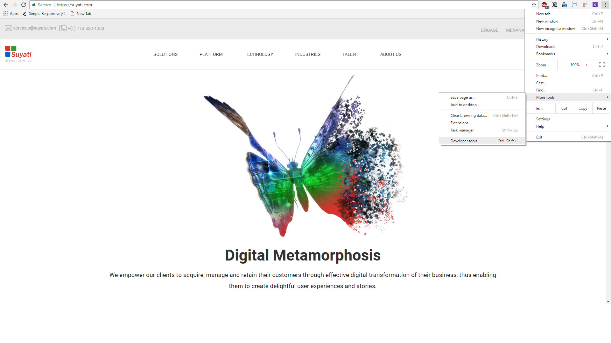
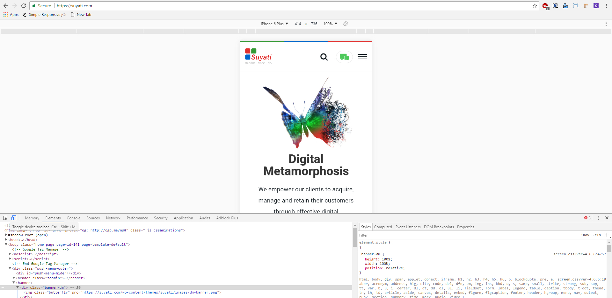
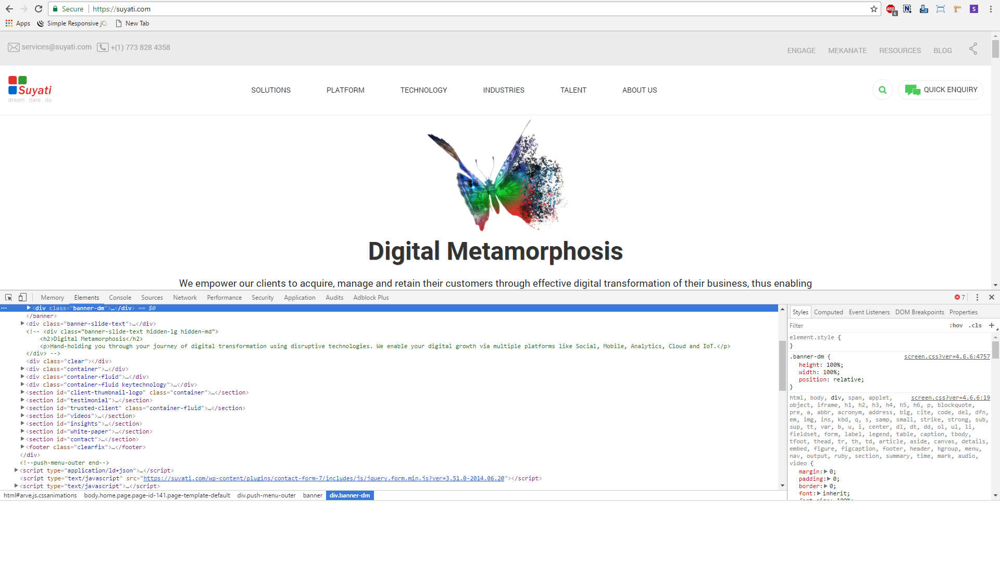
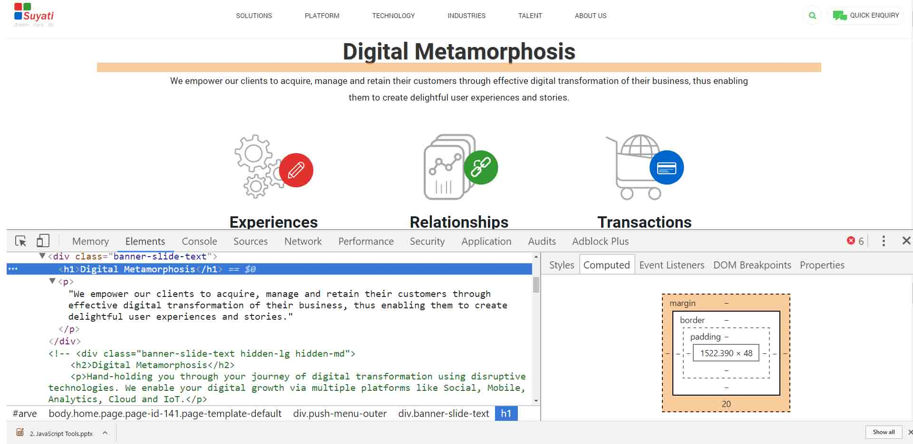
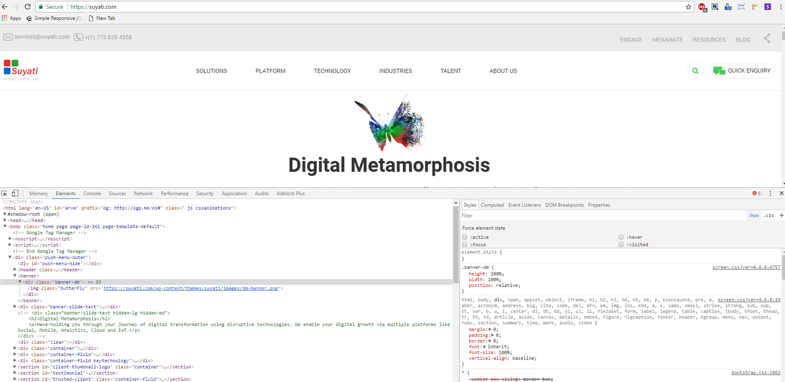
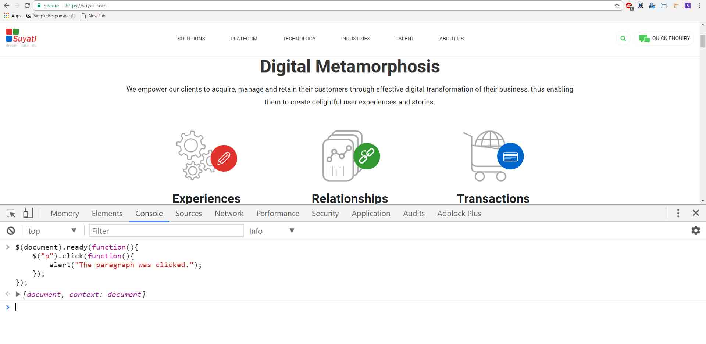
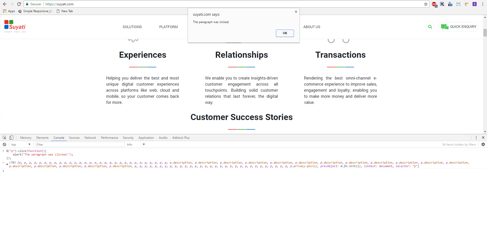
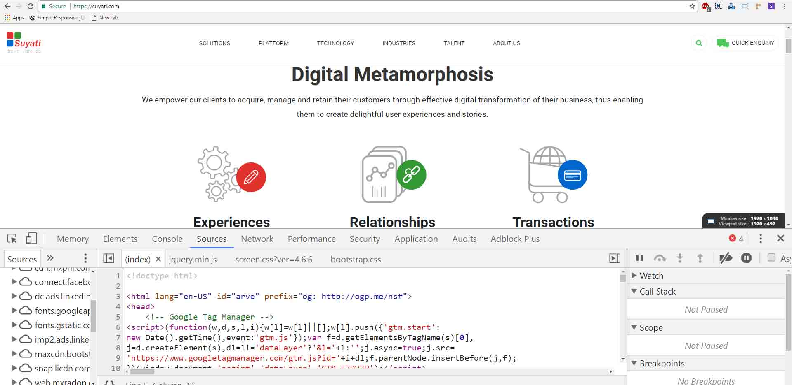
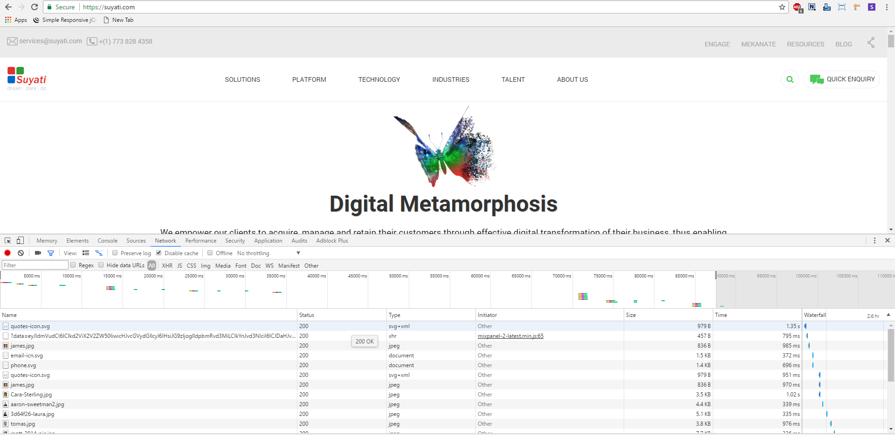

Browser Debugging is the process of finding and resolving of defects that prevent correct operation through the browsers of computer software or a system.
Select More Tools > Developer Tools from Chrome's Main Menu. Right-click a page element and select Inspect.(Short Key - F12)

Device Mode
( Build fully responsive, mobile-first web experiences. )

You can also toggle Device Mode by pressing Ctrl+Shift+M (Windows, Linux). To use this shortcut your mouse needs to be focused on your DevTools window.
The Viewport Controls allow you to test your site against a variety of devices, as well as fully responsively. It comes in two modes:
1 ) Responsive. Makes the Viewport freely resizable via big handles on either side.( Portrait-Landscape )
2 )Specific Device. Locks the Viewport to the exact viewport size of a specific device and emulates certain device characteristics.
Elements panel
( Iterate on the layout and design of your site by freely manipulating the DOM and CSS. )

While you selecting each elements on the left side you can see the corresponding styles of each element on the right side. So we can check and edit element styles according to your needs, but its a temporary change that we can only show at that time. You can copy paste the style changes in your css file.You can also edit the html part of each elements.

The computed panel shows the box model of an element.
Add a pseudostate to a class

Console panel
( Log diagnostic information during development or interact with the JavaScript on the page. )

We can edit the code here after type the code press th eenter button to show the changes

Sources panel
( Debug your JavaScript using breakpoints or connect your local files via Workspaces to use DevTools as a code editor. )

Network panel
( Optimize page load performance and debug request issues. )
